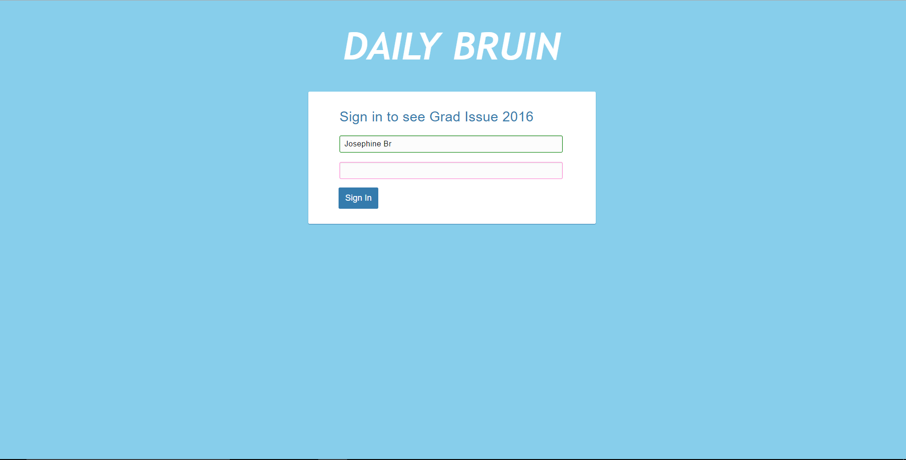
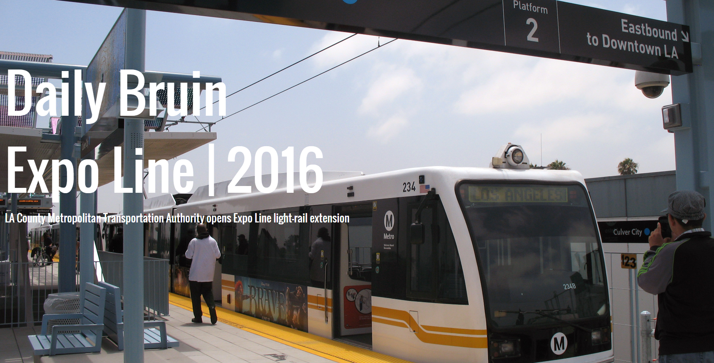

Graduation Issue 2016
View here.
Every year, the Daily Bruin has a graduation issue, which is a 40-page paper that looks back on what happened at UCLA for the past school year. This is the website that two staff members and I created.
Used Bootstrap, Handlebars.js, Slick.js, Typed.js, Isotope.js, Magnific Popup
Expo Line 2016
View here.
A staff member of the Daily Bruin and I created this web page to display the articles written about Los Angeles' new expo line in 2016.
UCLA researchers develop camera, technique to find cancerous tissue

View here.
This was ans article I wrote about research done in the bioengineering department. I pitched, interviewed, wrote, copy edited, and published the story.
display art projects? yes mb section it off too like coding projects/art projects/articles written